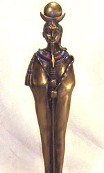

Хонсу ("проходить"), в єгипетській міфології бог місяця, бог часу і його вимірювання, син Амона і богині неба Мут. Хонсу також шанувався як бог подорожей. Як покровитель медицини, Хонсу зближався з богом мудрості Тотом, входив в фиванскую тріаду божеств.
На дійшли до нас зображеннях Хонсу найчастіше ми бачимо юнака з серпом і диском місяця на голові, іноді він з'являється у вигляді бога-дитини з пальцем біля рота і "локоном молодості", який хлопчики носили збоку голови аж до повноліття. Центр культу Хонсу - Фіви, в Карнаці знаходився його головний храм.
Карнакський храмовий комплекс складається з трьох великих частин, фіванської тріаді божеств - сонячному богу Амону-Ра, його дружині, покровительці цариць богині Мут і їх синові - місячному богові Хонсу. Святилище на території Карнака виникло ще близько XXVIII століття до нашої ери, найдавніші з збережених споруд відносяться до епохи Середнього царства (наприклад, так званий Білий храм Сенусерта I; XX століття до нашої ери).